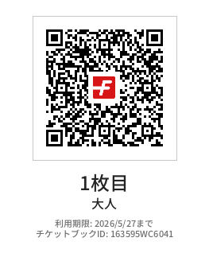
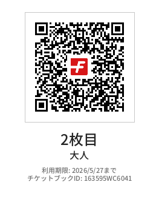

01
仙石原の新緑と花を歩く一日
08:31
京王線若葉台駅 出発
京王相模原線 快速 橋本行き（1駅・3分）。次の駅で下車。
08:34 — 08:38
乗換京王永山 → 小田急永山
改札を出て徒歩約3分で小田急改札へ。駅舎は同じ建物内。
08:38 — 08:50
多摩線小田急永山 → 新百合ヶ丘
小田急多摩線 各駅停車 新百合ヶ丘行き。約12分で終点。新百合ヶ丘でロマンスカーに乗り換え（12分の余裕）。
09:02 — 10:18
特急はこね1号（EXE10）
ロマンスカー はこね1号
予約済
EXE10形（30000形リニューアル車）。箱根湯本まで約76分の特急旅。チケットレスでスマホ表示OK。
10:18 — 10:30
バス箱根湯本駅 → 3番のりば
改札を出て駅前ロータリー 3番のりば へ。10:30 発 T路線（桃源台行き）に乗車。
※ 直前 10:20 発もあるが、降車・乗換で 2分はタイト。10:30 発が安全。
※ 直前 10:20 発もあるが、降車・乗換で 2分はタイト。10:30 発が安全。
10:30 — 10:55
バス箱根湯本 → 仙石案内所前
T路線 桃源台行き（宮ノ下・宮城野・ガラスの森・仙石経由）で約25分。仙石案内所前で下車、湿生花園まで徒歩約10分。
13:00 — 16:00
美術館箱根ガラスの森美術館
箱根ガラスの森美術館
MAP
15〜18世紀のヴェネチアン・グラス約100点。16万粒のクリスタル「光の回廊」は午後の光で最も輝く。庭園の「誓いの鐘」もぜひ。
入館QR（2枚 / 大人）

1枚目

2枚目
13:00
ランチCaffe Terrazza うかい
カフェテラッツァ うかい
MAP
大涌谷と庭園を眺めながら、生演奏付きのランチ。うかい特選牛ボロネーゼ、海老のアメリケーヌソースパスタなど。平日L.O. 15:00。予約不可・先着順。
17:00
宿泊箱根仙石原プリンスホテル チェックイン
箱根仙石原プリンスホテル
MAP
バス停「仙石高原」到着後、ドライバー直通 070-4502-8634 に電話して送迎車を呼ぶ（8:30〜19:00）。
17:00 — 17:30
温泉夕食前の一湯目
姥子温泉（単純温泉）。刺激少なく肌に優しい泉質。露天風呂から箱根外輪山を望む。2025年リニューアル済み。
17:30 —
夕食プラ・デュ・ジュール「スヴニール」
フランス料理コース「スヴニール」。予約済み。
夜
くつろぎバー → 夜の露天風呂
食後にバーでカクテル。就寝前の露天風呂で星空を。混雑状況はスマホアプリで確認可能。